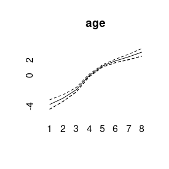
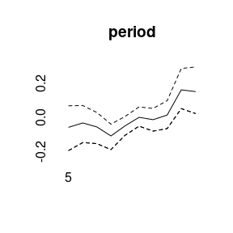
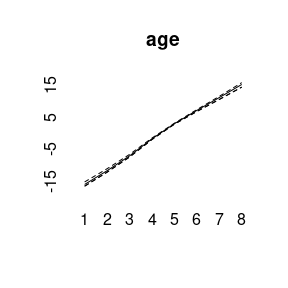
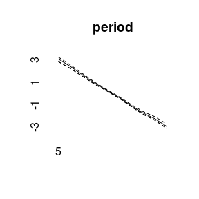
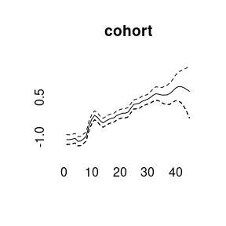
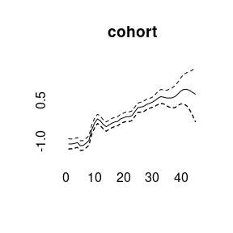

Bayesian Age-Period-Cohort Modeling
Volker Schmid
2022-05-28
Source:vignettes/largevignettes/modeling.Rmd
modeling.RmdData example
BAMP includes a data example.
data(apc)
plot(cases[,1],type="l",ylim=range(cases), ylab="cases", xlab="year", main="cases per age group")
for (i in 2:8)lines(cases[,i], col=i)
APC model with random walk first order prior
model1 <- bamp(cases, population, age="rw1", period="rw1", cohort="rw1",
periods_per_agegroup = 5)bamp() automatically performs a check for MCMC convergence using Gelman and Rubin’s convergence diagnostic. We can manually check the convergence again:
checkConvergence(model1)## [1] TRUENow we have a look at the model results. This includes estimates of smoothing parameters and deviance and DIC:
print(model1)##
## Model:
## age (rw1) - period (rw1) - cohort (rw1) model
## Deviance: 231.42
## pD: 37.04
## DIC: 268.45
##
##
## Hyper parameters: 5% 50% 95%
## age 0.345 0.905 1.903
## period 69.109 200.513 633.637
## cohort 34.210 58.504 98.469
##
##
## Markov Chains convergence checked succesfully using Gelman's R (potential scale reduction factor).We can plot the main APC effects using point-wise quantiles:
plot(model1)
More quantiles are possible:


APC model with random walk second order prior
model2 <- bamp(cases, population, age="rw2", period="rw2", cohort="rw2",
periods_per_agegroup = 5,
mcmc.options=list("number_of_iterations"=200000, "burn_in"=100000, "step"=50, "tuning"=500),
hyperpar=list("age"=c(1,.5), "period"=c(1,0.05), "cohort"=c(1,0.05)))## Warning: MCMC chains did not converge!
checkConvergence(model2)## Warning: MCMC chains did not converge!## [1] FALSE
print(model2)##
## WARNING! Markov Chains have apparently not converged! DO NOT TRUST THIS MODEL!
##
## Model:
## age (rw2) - period (rw2) - cohort (rw2) model
## Deviance: 234.19
## pD: 36.83
## DIC: 271.02
##
##
## Hyper parameters: 5% 50% 95%
## age 1.060 2.912 6.536
## period 16.137 41.620 90.675
## cohort 23.443 44.834 82.756
plot(model2)
model3<-bamp(cases, population, age="rw1", period=" ", cohort="rw2",
periods_per_agegroup = 5)
checkConvergence(model3)## [1] TRUE
print(model3)##
## Model:
## age (rw1) cohort (rw2) model
## Deviance: 276.90
## pD: 30.32
## DIC: 307.22
##
##
## Hyper parameters: 5% 50% 95%
## age 0.286 0.712 1.487
## cohort 39.592 75.278 141.246
##
##
## Markov Chains convergence checked succesfully using Gelman's R (potential scale reduction factor).
plot(model3) 

(model4<-bamp(cases, population, age="rw1", period="rw1", cohort="rw1",
cohort_covariate = cov_c, periods_per_agegroup = 5))##
## Model:
## age (rw1) - period (rw1) - cohort (rw1) model
## Deviance: 231.51
## pD: 36.86
## DIC: 268.36
##
##
## Hyper parameters: 5% 50% 95%
## age 0.339 0.893 1.902
## period 70.979 207.075 647.341
## cohort 34.550 59.981 97.964
##
##
## Markov Chains convergence checked succesfully using Gelman's R (potential scale reduction factor).
plot(model4)


(model5<-bamp(cases, population, age="rw1", period="rw1", cohort="rw1",
period_covariate = cov_p, periods_per_agegroup = 5))##
## Model:
## age (rw1) - period (rw1) - cohort (rw1) model
## Deviance: 231.51
## pD: 36.91
## DIC: 268.43
##
##
## Hyper parameters: 5% 50% 95%
## age 0.354 0.920 1.947
## period 71.240 202.828 607.704
## cohort 34.467 59.122 97.426
##
##
## Markov Chains convergence checked succesfully using Gelman's R (potential scale reduction factor).
plot(model5)